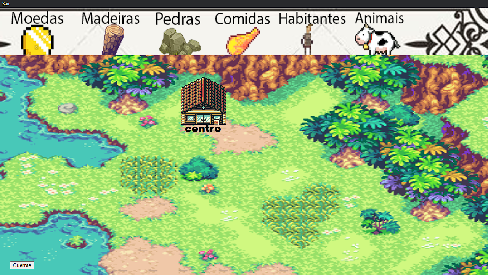
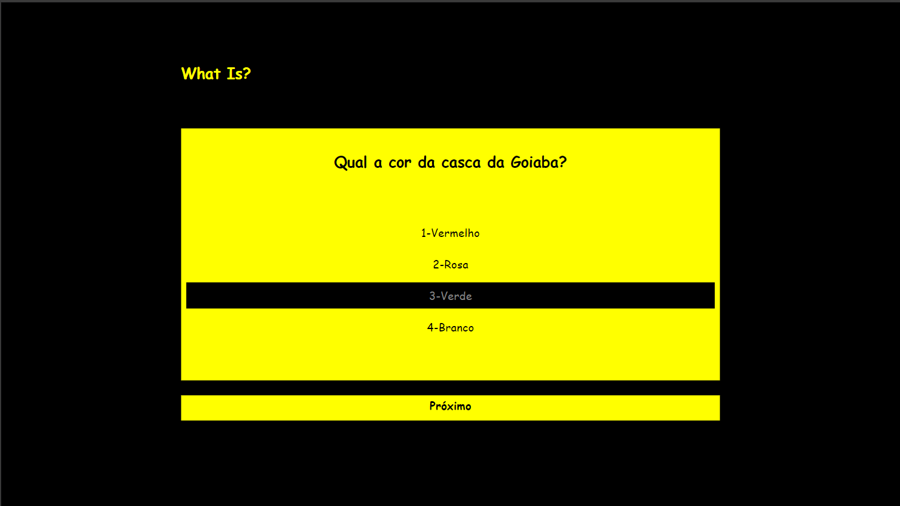

Portifólio
Little RPG
É um jogo de farm de recursos inspirado no jogo de SmartPhone CLASH OF CLANS em que o jogador tem que contruir uma vila coletando recursos e evoluindo as suas construições usando várias estratégias. Junto com um sistema de compate simples que há 3 tipos de chefes que você deve evoluir seu guerreiro para conseguir derrota-los em um combate no estilo dos jogos FINAL FANTASY antigos. Link para acesso

Level Man
É um jogo de plataforma onde há um cenário em que o jogador precisa chegar até o final, porém a tela vai andando em uma direção constantemente e caso o jogador encoste no limite superior ou inferior da tela ele morre, então o jogador precisa ir desviando dos obstáculos do cenário enquanto foje da movimentação da tela. Esse jogo foi inspirado na parte final da fase do fogo do jogo MEGAMEN X8 de PlayStation 2. Link para acesso
What Is
É um jogo de quiz onde há 10 perguntas de conhecimentos gerais e o jogador pode escolher entre 4 opções, após responder as 10 questões vai aparecer a tela final onde ele descobre quantas questões acertou e quantas errou. Esse jogo foi inspirado no jogo GÊNIO QUIZ para computadores. Link para acesso